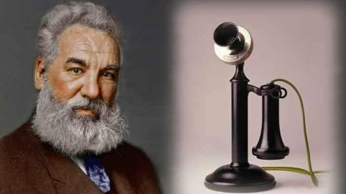
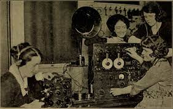

Temuan ini kemudian berkembang menjadi pengadaan jaringan komunikasi dengan kabel yang meliputi seluruh daratan Amerika, bahkan kemudian diikuti pemasangan kabel komunikasi trans-atlantik. Jaringan telepon ini merupakan infrastruktur masif pertama yang dibangun manusia untuk komunikasi global.
Ditandai dengan siaran AM pertama kali. Komunikasi suara tanpa kabel inipun segera berkembang pesat. Kemudian diikuti pula oleh transmisi audio-visual tanpa kabel, yang berwujud siaran televisi pada tahun 1940-an.
Komputer elektronik, juga sebagai wujud perkembangan TIK, beroperasi prtama kali pada tahun 1943. Lalu diikuti oleh tahapan miniaturisasi komponen elektronik melalui penemuan transistor pada tahun 1947 dan rangkaian terpadu (integrated electronics) pada tahun 1957.

Perkembangan teknologi elektronika, yang merupakan cikal bakal TIK saat ini, mendapatkan momen emasnya pada era Perang Dingin. Persaingan IPTEK antara blok Barat (Amerika Serikat) dan blok Timur (dulu Uni Soviet) justru memacu perkembangan teknologi elektronika lewat upaya miniaturisasi rangkaian elektronik untuk pengendali pesawat ruang angkasa maupun mesin-mesin perang.
Miniaturisasi komponen elektronik, melalui penciptaan rangkaian terpadu, pada puncaknya melahirkan mikroprosesor. Mikroprosesor inilah yang menjadi ‘otak’ perangkat keras komputer dan terus berevolusi sampai sekarang.
Perangkat telekomunikasi berkembang pesat saat teknologi digital mulai digunakan menggantikan teknologi analog. Teknologi analog mulai terasa menampakkan batas-batas maksimal pengeksplorasiannya. Digitalisasi perangkat telekomunikasi kemudian berkonvergensi dengan perangkat komputer yang sejak awal merupakan perangkat yang mengadopsi teknologi digital.